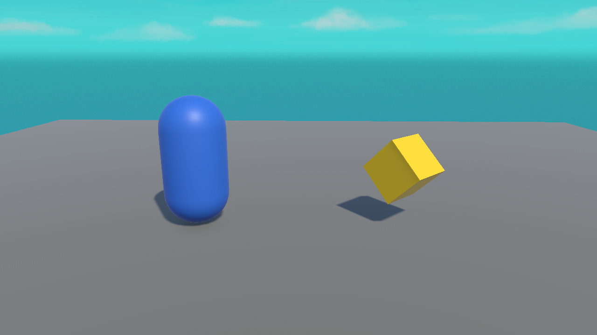

⭐ Lesson 5.4: Building a Collectible
Let's combine everything from this module into one satisfying game object: a collectible that spins to catch the eye, waits patiently, and pops out of existence the moment the player touches it. This is a real piece of your mini-game.
🎯 Learning Objectives
- Assemble a collectible from a mesh, a trigger collider, and scripts
- Make it spin for visual appeal
- Collect it on player touch and turn it into a reusable prefab
- Prepare the hook for scoring (built fully in Module 6)
Estimated Time: 40 minutes
Project: A finished, reusable collectible prefab.
In This Lesson
Building the Object
Our collectible will be a small tilted cube — bright, spinning, and pickup-able. Here it is beside the player:

- Add a Cube, scale it to about
(0.6, 0.6, 0.6), and give it a bright material (Lesson 2.3). - Raise it to Position Y ≈ 0.8 so it floats just off the floor.
- On its Box Collider, tick Is Trigger (Lesson 5.2).
- Rename it
Collectible.
Making It Spin
A spinning pickup reads as "grab me!" Reuse the spin idea from Lesson 3.3. Create a Collectible script:
using UnityEngine;
public class Collectible : MonoBehaviour
{
public float spinSpeed = 90f; // degrees per second
void Update()
{
// gentle spin around Y for visual appeal
transform.Rotate(0f, spinSpeed * Time.deltaTime, 0f);
}
}Collecting It
Now add the pickup behaviour to the same script — when the player enters the trigger, collect it. We'll print a message for now and wire real scoring in Module 6:
using UnityEngine;
public class Collectible : MonoBehaviour
{
public float spinSpeed = 90f;
void Update()
{
transform.Rotate(0f, spinSpeed * Time.deltaTime, 0f);
}
void OnTriggerEnter(Collider other)
{
if (other.CompareTag("Player"))
{
Debug.Log("Collected! (score will go here in Module 6)");
Destroy(gameObject); // remove this collectible
}
}
}⚠️ The three must-haves
For the pickup to fire: the collectible's collider has Is Trigger ON, the player has a Rigidbody, and the player is tagged "Player". Miss one and nothing happens — this is the checklist to run every time.
Turn It Into a Prefab
You'll want many collectibles, so make it a prefab (Lesson 2.4):
- Drag the finished
Collectiblefrom the Hierarchy into a Prefabs folder. - Drag the prefab back into the scene several times to scatter collectibles around.
- Later, tweak the prefab once (e.g. change
spinSpeed) and every collectible updates.
Hands-on Exercise
🏋️ Exercise: A field of stars
- Build the spinning, collectible cube with the full
Collectiblescript. - Confirm it spins and disappears when the player (tagged, with Rigidbody) touches it.
- Make it a prefab and scatter 5–6 around the floor.
- Play and collect them all — each vanishes and logs a message.
💡 It spins but won't collect
Run the three-must-haves checklist above. Almost always it's a missing Rigidbody on the player or a missing "Player" tag.
✅ Bonus: bob while spinning
void Update()
{
transform.Rotate(0f, spinSpeed * Time.deltaTime, 0f);
float y = 0.8f + Mathf.Sin(Time.time * 2f) * 0.15f;
transform.position = new Vector3(transform.position.x, y, transform.position.z);
}🎯 Quick Quiz
Question 1: Why make the collectible a prefab?
Question 2: The collectible spins but never gets collected. What's the most likely miss?
Summary
🎉 Key Takeaways
- A collectible = mesh + bright material + trigger collider + a script.
- Spin it in
Updatefor appeal; collect it inOnTriggerEnterwith a tag check +Destroy. - Save it as a prefab to scatter many and edit them all at once.
- The scoring hook is ready — we complete it in Module 6.
🚀 What's Next?
Collecting things is satisfying — but players need to see their progress. Module 6 adds on-screen UI, a live score, and sound.
🎉 Module 5 complete!
Gravity, colliders, triggers, and a real working collectible. Your game is taking shape.